1. 概述
ReentrantReadWriteLock是Lock的另一种实现方式，我们已经知道了ReentrantLock是一个排他锁，同一时间只允许一个线程访问，而ReentrantReadWriteLock允许多个读线程同时访问，但不允许写线程和读线程、写线程和写线程同时访问。相对于排他锁，提高了并发性。在实际应用中，大部分情况下对共享数据（如缓存）的访问都是读操作远多于写操作，这时ReentrantReadWriteLock能够提供比排他锁更好的并发性和吞吐量。
读写锁内部维护了两个锁，一个用于读操作，一个用于写操作。所有 ReadWriteLock实现都必须保证 writeLock操作的内存同步效果也要保持与相关 readLock的联系。也就是说，成功获取读锁的线程会看到写入锁之前版本所做的所有更新。
ReentrantReadWriteLock支持以下功能：
1）支持公平和非公平的获取锁的方式；
2）支持可重入。读线程在获取了读锁后还可以获取读锁；写线程在获取了写锁之后既可以再次获取写锁又可以获取读锁；
3）还允许从写入锁降级为读取锁，其实现方式是：先获取写入锁，然后获取读取锁，最后释放写入锁。但是，从读取锁升级到写入锁是不允许的；
4）读取锁和写入锁都支持锁获取期间的中断；
5）Condition支持。仅写入锁提供了一个 Conditon 实现；读取锁不支持 Conditon ，readLock().newCondition() 会抛出 UnsupportedOperationException。
2. ReadWriteLock接口简单说明
ReadWriteLock接口只定义了两个方法：
1 | public interface ReadWriteLock { |
通过调用相应方法获取读锁或写锁，获取的读锁及写锁都是Lock接口的实现，可以如同使用Lock接口一样使用（其实也有一些特性是不支持的）。
3. ReentrantReadWriteLock使用示例
读写锁的使用并不复杂，可以参考以下使用示例：
1 | class RWDictionary { |
与普通重入锁使用的主要区别在于需要使用不同的锁对象引用读写锁，并且在读写时分别调用对应的锁。
4. ReentrantReadWriteLock锁实现分析
本节通过学习源码分析可重入读写锁的实现。
4.1 图解重要函数及对象关系
根据示例代码可以发现，读写锁需要关注的重点函数为获取读锁及写锁的函数，对于读锁及写锁对象则主要关注加锁和解锁函数，这几个函数及对象关系如下图：
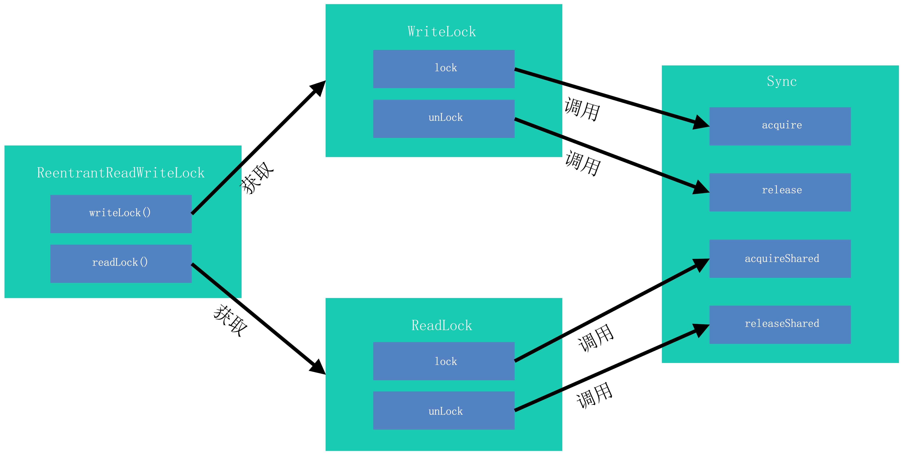
从图中可见读写锁的加锁解锁操作最终都是调用ReentrantReadWriteLock类的内部类Sync提供的方法。与Java技术之ReentrantLock的实现原理一文中描述相似，Sync对象通过继承AbstractQueuedSynchronizer进行实现，故后续分析主要基于Sync类进行。
4.2. 读写锁Sync结构分析
Sync继承于AbstractQueuedSynchronizer，其中主要功能均在AbstractQueuedSynchronizer中完成，其中最重要功能为控制线程获取锁失败后转换为等待状态及在满足一定条件后唤醒等待状态的线程。先对AbstractQueuedSynchronizer进行观察。
4.2.1. AbstractQueuedSynchronizer图解
为了更好理解AbstractQueuedSynchronizer的运行机制，可以首先研究其内部数据结构，如下图：
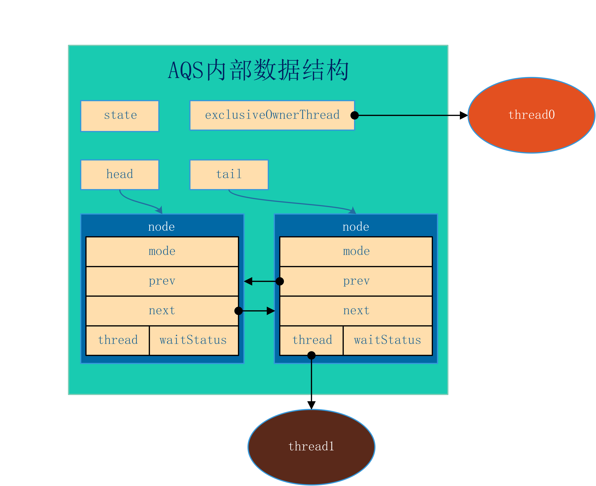
图中展示AQS类较为重要的数据结构，包括int类型变量state用于记录锁的状态，继承自AbstractOwnableSynchronizer类的Thread类型变量exclusiveOwnerThread用于指向当前排他的获取锁的线程，AbstractQueuedSynchronizer.Node类型的变量head及tail。
其中Node对象表示当前等待锁的节点，Node中thread变量指向等待的线程，waitStatus表示当前等待节点状态，mode为节点类型。多个节点之间使用prev及next组成双向链表，参考CLH锁队列的方式进行锁的获取，但其中与CLH队列的重要区别在于CLH队列中后续节点需要自旋轮询前节点状态以确定前置节点是否已经释放锁，期间不释放CPU资源，而AQS中Node节点指向的线程在获取锁失败后调用LockSupport.park函数使其进入阻塞状态，让出CPU资源，故在前置节点释放锁时需要调用unparkSuccessor函数唤醒后继节点。
根据以上说明可得知此上图图主要表现当前thread0线程获取了锁，thread1线程正在等待。
4.2.2. 读写锁Sync对于AQS使用
读写锁中Sync类是继承于AQS，并且主要使用上文介绍的数据结构中的state及waitStatus变量进行实现。
实现读写锁与实现普通互斥锁的主要区别在于需要分别记录读锁状态及写锁状态，并且等待队列中需要区别处理两种加锁操作。Sync使用state变量同时记录读锁与写锁状态，将int类型的state变量分为高16位与第16位，高16位记录读锁状态，低16位记录写锁状态，如下图所示：
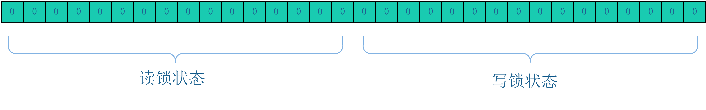
Sync使用不同的mode描述等待队列中的节点以区分读锁等待节点和写锁等待节点。mode取值包括SHARED及EXCLUSIVE两种，分别代表当前等待节点为读锁和写锁。
4.3. 读写锁Sync代码过程分析
4.3.1. 写锁加锁
通过对于重要函数关系的分析，写锁加锁最终调用Sync类的acquire函数（继承自AQS）
1 | public final void acquire(int arg) { |
现在分情况图解分析
4.3.1.1. 无锁状态
无锁状态AQS内部数据结构如下图所示：
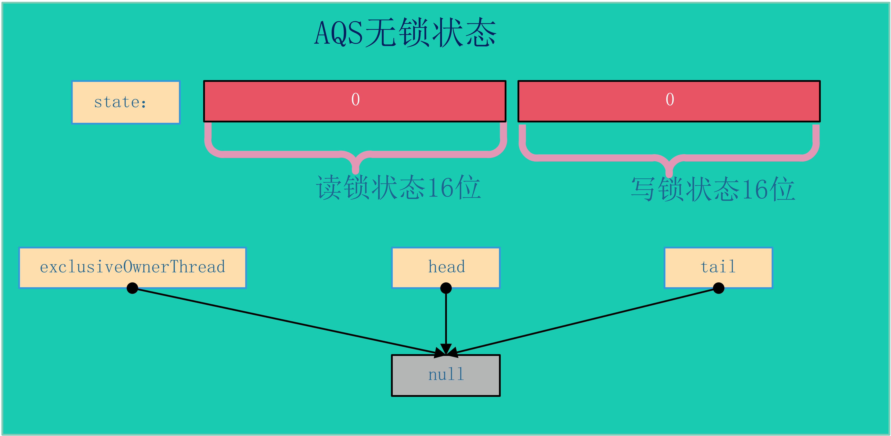
其中state变量为0，表示高位地位地位均为0，没有任何锁，且等待节点的首尾均指向空（此处特指head节点没有初始化时），锁的所有者线程也为空。
在无锁状态进行加锁操作，线程调用acquire函数，首先使用tryAcquire函数判断锁是否可获取成功，由于当前是无锁状态必然成功获取锁（如果多个线程同时进入此函数，则有且只有一个线程可调用compareAndSetState成功，其他线程转入获取锁失败的流程）。获取锁成功后AQS状态为：
4.3.1.2. 有锁状态
在加写锁时如果当前AQS已经是有锁状态，则需要进一步处理。有锁状态主要分为已有写锁和已有读锁状态，并且根据最终当前线程是否可直接获取锁分为两种情况：
- 非重入：如果满足一下两个条件之一，当前线程必须加入等待队列（暂不考虑非公平锁抢占情况）
- a. 已有读锁；
- b. 有写锁且获取写锁的线程不为当前请求锁的线程。
- 非重入：如果满足一下两个条件之一，当前线程必须加入等待队列（暂不考虑非公平锁抢占情况）
- 重入：有写锁且当前获取写锁的线程与当前请求锁的线程为同一线程，则直接获取锁并将写锁状态值加1。
写锁重入状态如图：
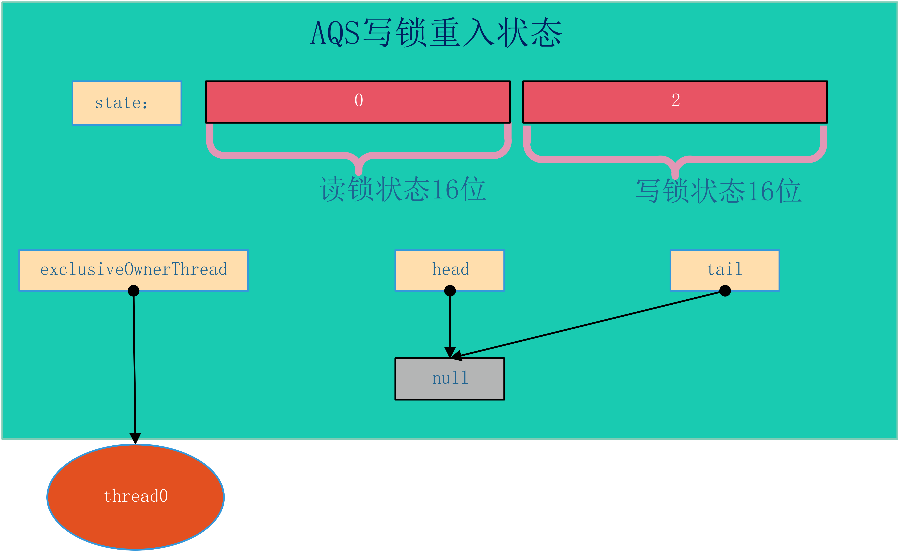
写锁非重入等待状态如图：
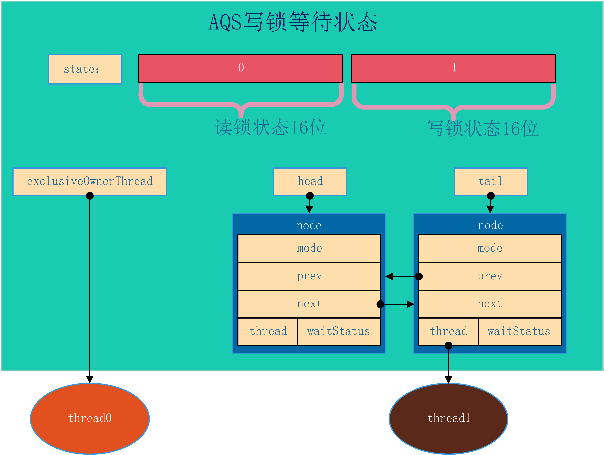
在非重入状态，当前线程创建等待节点追加到等待队列队尾，如果当前头结点为空，则需要创建一个默认的头结点。
之后再当前获取锁的线程释放锁后，会唤醒等待中的节点，即为thread1。如果当前等待队列存在多个等待节点，由于thread1等待节点为EXCLUSIVE模式，则只会唤醒当前一个节点，不会传播唤醒信号。
4.3.2. 读锁加锁
通过对于重要函数关系的分析，写锁加锁最终调用Sync类的acquireShared函数（继承自AQS）：
1 | public final void acquireShared(int arg) { |
同上文，现在分情况图解分析
4.3.2.1. 无锁状态
无所状态AQS内部数据状态图与写加锁是无锁状态一致：
在无锁状态进行加锁操作，线程调用acquireShared函数，首先使用tryAcquireShared函数判断共享锁是否可获取成功，由于当前为无锁状态则获取锁一定成功（如果同时多个线程在读锁进行竞争，则只有一个线程能够直接获取读锁，其他线程需要进入fullTryAcquireShared函数继续进行锁的获取，该函数在后文说明）。当前线程获取读锁成功后，AQS内部结构如图所示：
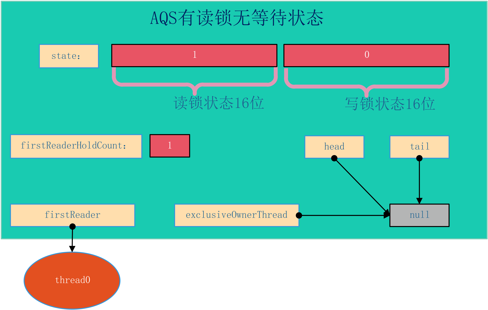
其中有两个新的变量：firstReader及firstReaderHoldCount。firstReader指向在无锁状态下第一个获取读锁的线程，firstReaderHoldCount记录第一个获取读锁的线程持有当前锁的计数（主要用于重入）。
4.3.2.2. 有锁状态
无锁状态获取读锁比较简单，在有锁状态则需要分情况讨论。其中需要分当前被持有的锁是读锁还是写锁，并且每种情况需要区分等待队列中是否有等待节点。
已有读锁且等待队列为空
此状态比较简单，图示如：
此时线程申请读锁，首先调用readerShouldBlock函数进行判断，该函数根据当前锁是否为公平锁判断规则稍有不同。如果为非公平锁，则只需要当前第一个等待节点不是写锁就可以尝试获取锁（考虑第一点为写锁主要为了方式写锁“饿死”）；如果是公平锁则只要有等待节点且当前锁不为重入就需要等待。
由于本节的前提是等待队列为空的情况，故readerShouldBlock函数一定返回false，则当前线程使用CAS对读锁计数进行增加（同上文，如果同时多个线程在读锁进行竞争，则只有一个线程能够直接获取读锁，其他线程需要进入fullTryAcquireShared函数继续进行锁的获取）。
在成功对读锁计数器进行增加后，当前线程需要继续对当前线程持有读锁的计数进行增加。此时分为两种情况：
- 当前线程是第一个获取读锁的线程，此时由于第一个获取读锁的线程已经通过
firstReader及firstReaderHoldCount两个变量进行存储，则仅仅需要将firstReaderHoldCount加1即可;
- 当前线程是第一个获取读锁的线程，此时由于第一个获取读锁的线程已经通过
- 当前线程不是第一个获取读锁的线程，则需要使用
readHolds进行存储，readHolds是ThreadLocal的子类，通过readHolds可获取当前线程对应的HoldCounter类的对象，该对象保存了当前线程获取读锁的计数。考虑程序的局部性原理，又使用cachedHoldCounter缓存最近使用的HoldCounter类的对象，如在一段时间内只有一个线程请求读锁则可加速对读锁获取的计数。
- 当前线程不是第一个获取读锁的线程，则需要使用
第一个读锁线程重入如图：
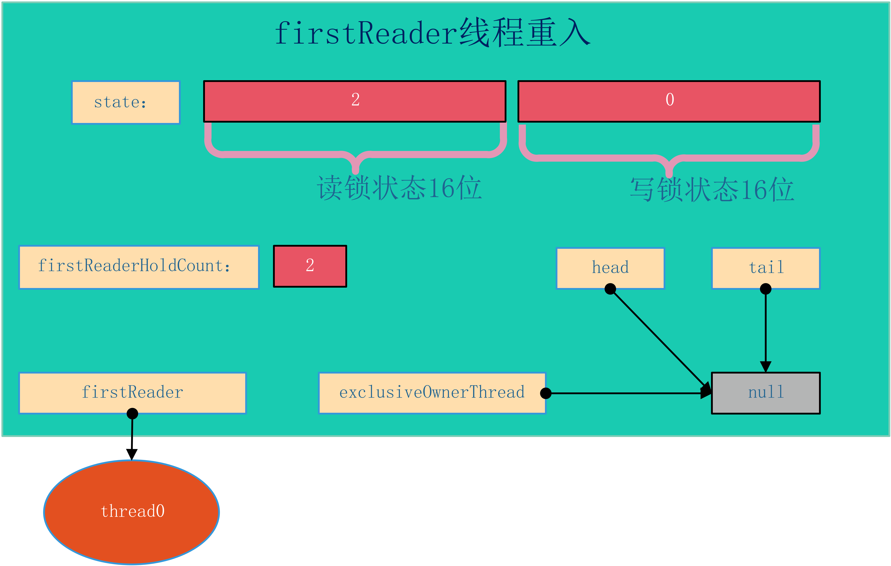
非首节点获取读锁
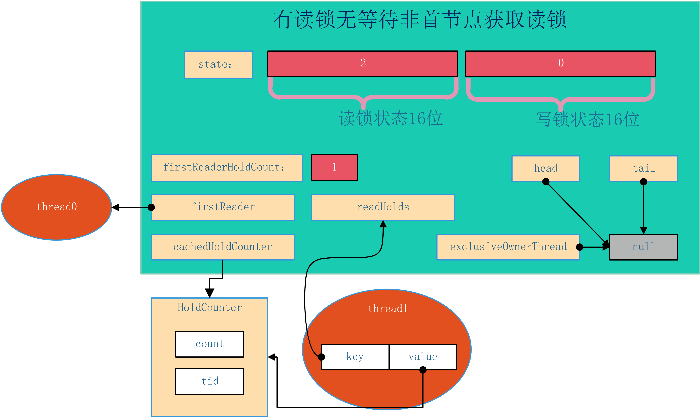
根据上图所示，thread0为首节点，thread1线程继续申请读锁，获取成功后使用ThreadLocal链接的方式进行存储计数对象，并且由于其为最近获取读锁的线程，则cachedHoldCounter对象设置指向thread1对应的计数对象。
已有读锁且等待队列不为空
在当前锁已经被读锁获取，且等待队列不为空的情况下 ，可知等待队列的头结点一定为写锁获取等待，这是由于在读写锁实现过程中，如果某线程获取了读锁，则会唤醒当前等到节点之后的所有等待模式为SHARED的节点，直到队尾或遇到EXCLUSIVE模式的等待节点（具体实现函数为setHeadAndPropagate后续还会遇到）。所以可以确定当前为读锁状态其有等待节点情况下，首节点一定是写锁等待。如图所示：
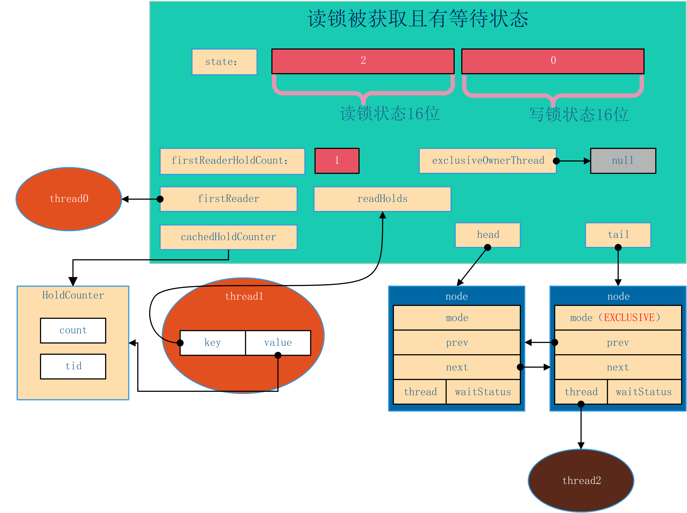
上图展示当前thread0与thread1线程获取读锁，thread0为首个获取读锁的节点，并且thread2线程在等待获取写锁。
在上图显示的状态下，无论公平锁还是非公平锁的实现，新的读锁加锁一定会进行排队，添加等待节点在写锁等待节点之后，这样可以防止写操作的饿死。申请读锁后的状态如图所示：
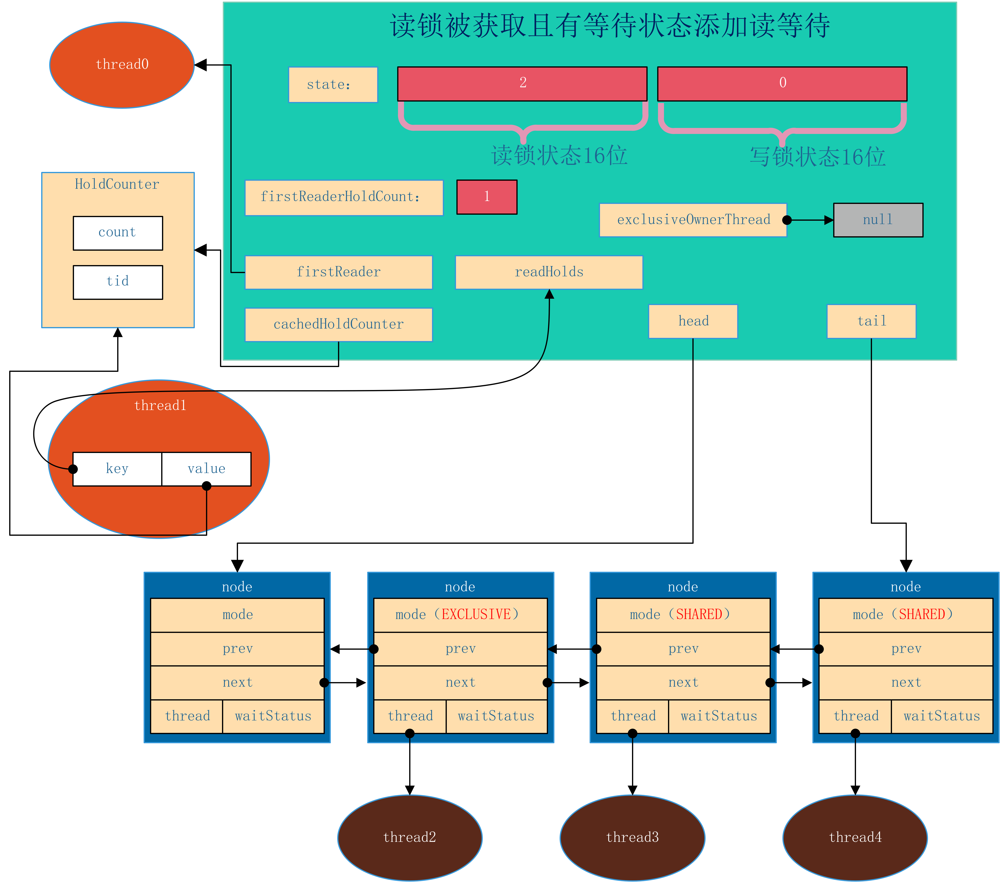
如图所示，在当前锁被为读锁且有等待队列情况下，thread3及thread4线程申请读锁，则被封装为等待节点追加到当前等待队列后，节点模式为SHARED，线程使用LockSupport.park函数进入阻塞状态，让出CPU资源，直到前驱的等待节点完成锁的获取和释放后进行唤醒。
已有写锁被获取
当前线程申请读锁时发现写锁已经被获取，则无论等待队列是否为空，线程一定会需要加入等待队列（注意在非公平锁实现且前序没有写锁申请的等待，线程有机会抢占获取锁而不进入等待队列）。写锁被获取的情况下，AQS状态为如下状态
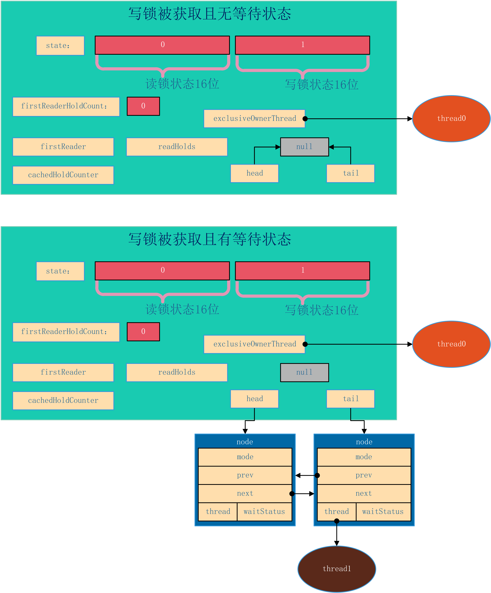
在两种情况下，读锁获取都会进入等待队列等待前序节点唤醒，这里不再赘述。
4.3.2.3. 读锁加锁读等待节点被唤醒
读写锁与单纯的排他锁主要区别在于读锁的共享性，在读写锁实现中保证读锁能够共享的其中一个机制就在于，如果一个读锁等待节点被唤醒后其会继续唤醒拍在当前唤醒节点之后的SHARED模式等待节点。查看源码：
1 | private void doAcquireShared(int arg) { |
在for循环中，线程如果获取读锁成功后，需要调用setHeadAndPropagate方法。查看其源码：
1 | private void setHeadAndPropagate(Node node, int propagate) { |
在满足传播条件情况下，获取读锁后继续唤醒后续节点，所以如果当前锁是读锁状态则等待节点第一个节点一定是写锁等待节点。
4.3.2.4. 锁降级
锁降级算是获取读锁的特例，如在t0线程已经获取写锁的情况下，再调取读锁加锁函数则可以直接获取读锁，但此时其他线程仍然无法获取读锁或写锁，在t0线程释放写锁后，如果有节点等待则会唤醒后续节点，后续节点可见的状态为目前有t0线程获取了读锁。
所降级有什么应用场景呢？引用读写锁中使用示例代码
1 | class CachedData { |
其中针对变量cacheValid的使用主要过程为加读锁、读取、释放读锁、加写锁、修改值、加读锁、释放写锁、使用数据、释放读锁。其中后续几步（加写锁、修改值、加读锁、释放写锁、使用数据、释放读锁）为典型的锁降级。如果不使用锁降级，则过程可能有三种情况：
- 第一种：加写锁、修改值、释放写锁、使用数据，即使用写锁修改数据后直接使用刚修改的数据，这样可能有数据的不一致，如当前线程释放写锁的同时其他线程（如
t0）获取写锁准备修改（还没有改）cacheValid变量，而当前线程却继续运行，则当前线程读到的cacheValid变量的值为t0修改前的老数据； - 第二种：加写锁、修改值、使用数据、释放写锁，即将修改数据与再次使用数据合二为一，这样不会有数据的不一致，但是由于混用了读写两个过程，以排它锁的方式使用读写锁，减弱了读写锁读共享的优势，增加了写锁（独占锁）的占用时间；
- 第三种：加写锁、修改值、释放写锁、加读锁、使用数据、释放读锁，即使用写锁修改数据后再请求读锁来使用数据，这是时数据的一致性是可以得到保证的，但是由于释放写锁和获取读锁之间存在时间差，则当前想成可能会需要进入等待队列进行等待，可能造成线程的阻塞降低吞吐量。
因此针对以上情况提供了锁的降级功能，可以在完成数据修改后尽快读取最新的值，且能够减少写锁占用时间。
最后注意，读写锁不支持锁升级，即获取读锁、读数据、获取写锁、释放读锁、释放写锁这个过程，因为读锁为共享锁，如同时有多个线程获取了读锁后有一个线程进行锁升级获取了写锁，这会造成同时有读锁（其他线程）和写锁的情况，造成其他线程可能无法感知新修改的数据（此为逻辑性错误），并且在JAVA读写锁实现上由于当前线程获取了读锁，再次请求写锁时必然会阻塞而导致后续释放读锁的方法无法执行，这回造成死锁（此为功能性错误）。
4.3.3. 写锁释放锁过程
了解了加锁过程后解锁过程就非常简单，每次调用解锁方法都会减少重入计数次数，直到减为0则唤醒后续第一个等待节点，如唤醒的后续节点为读等待节点，则后续节点会继续传播唤醒状态。
4.3.4. 读锁释放过程
读锁释放过比写锁稍微复杂，因为是共享锁，所以可能会有多个线程同时获取读锁，故在解锁时需要做两件事：
- 获取当前线程对应的重入计数，并进行减1，此处天生为线程安全的，不需要特殊处理；
- 当前读锁获取次数减1，此处由于可能存在多线程竞争，故使用自旋CAS进行设置。
完成以上两步后，如读状态为0，则唤醒后续等待节点。
- 当前读锁获取次数减1，此处由于可能存在多线程竞争，故使用自旋CAS进行设置。
5. 总结
根据以上分析，本文主要展示了读写锁的场景及方式，并分析读写锁核心功能（加解锁）的代码实现。Java读写锁同时附带了更多其他方法，包括锁状态监控和带超时机制的加锁方法等，本文不在赘述。并且读写锁中写锁可使用Conditon机制也不在详细说明。